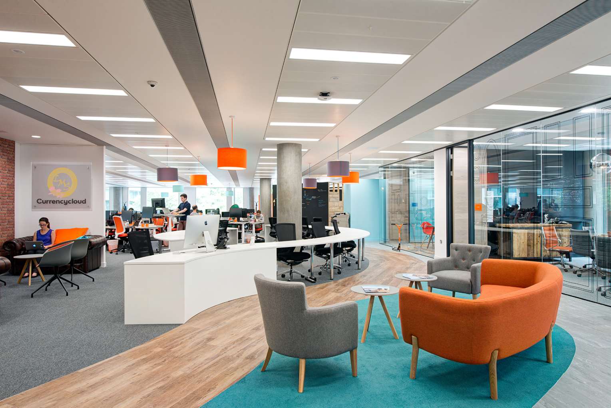

Facilities
Courtyard
 This is the boasting courtyard of our school. The courtyard was designed by Gar-den, a world-renowned gardener. In sunny day,
sunlight falls and eating in a calm atmosphere is a world-class dish. In this garden, concert of the school's proud brass band and choir
is held once a month. You can also take an elegant lunch while enjoying the performances of the brass band and choir.
It seems that some students decided to enroll for a wonderful lunch time.
This is the boasting courtyard of our school. The courtyard was designed by Gar-den, a world-renowned gardener. In sunny day,
sunlight falls and eating in a calm atmosphere is a world-class dish. In this garden, concert of the school's proud brass band and choir
is held once a month. You can also take an elegant lunch while enjoying the performances of the brass band and choir.
It seems that some students decided to enroll for a wonderful lunch time.
Canteen
 Our school also has a canteen. Japanese, Western and Chinese dishes are prepared every day so that many students can enjoy it.
The price is around 4 dollars, and it is affordable. We have dedicated dietitian for "cheap and delicious".
In addition, there is an annual passport, which is as low as 3.8 dollars per meal, and about half of students use this.
Also, there are also purchases in the back of the cafeteria, so please use this when you are short on time or hungry.
Our school also has a canteen. Japanese, Western and Chinese dishes are prepared every day so that many students can enjoy it.
The price is around 4 dollars, and it is affordable. We have dedicated dietitian for "cheap and delicious".
In addition, there is an annual passport, which is as low as 3.8 dollars per meal, and about half of students use this.
Also, there are also purchases in the back of the cafeteria, so please use this when you are short on time or hungry.
Nap room
 Our school also has a nap room. Taking a nap has been shown to be very effective for afternoon activities,
and our school has decided to incorporate it this year. Thorough air conditioning management and hygiene management allow you to take a comfortable nap.
The introduction of the nap room has been very successful and has received positive feedback from many students and parents.
At times, the nap room is full and there is not enough space, so we are currently considering expanding the nap room.
Our school also has a nap room. Taking a nap has been shown to be very effective for afternoon activities,
and our school has decided to incorporate it this year. Thorough air conditioning management and hygiene management allow you to take a comfortable nap.
The introduction of the nap room has been very successful and has received positive feedback from many students and parents.
At times, the nap room is full and there is not enough space, so we are currently considering expanding the nap room.
PC room

As shown in the education content, we have a programming class at our school. When you hear the PC room,
as you might imagine formal space, but our school has an open computer room like the one in the photo, which stimulates students' creativity.
In this PC room, we have prepared the latest personal computer. Therefore, don't worry about preparing your own PC.
Library
 Our library is renowned as one of the most beautiful libraries in London. For this reason, we rent to the outside,
and many people visit this library. Surprisingly, this library has 100,000 books. Of course, the content is substantial,
and we have all genres from novels, utility books, reference books to magazines. In search of a wonderful book, encounter with a person,
please try using this library. It's nice to find one of your favorite books.
Our library is renowned as one of the most beautiful libraries in London. For this reason, we rent to the outside,
and many people visit this library. Surprisingly, this library has 100,000 books. Of course, the content is substantial,
and we have all genres from novels, utility books, reference books to magazines. In search of a wonderful book, encounter with a person,
please try using this library. It's nice to find one of your favorite books.